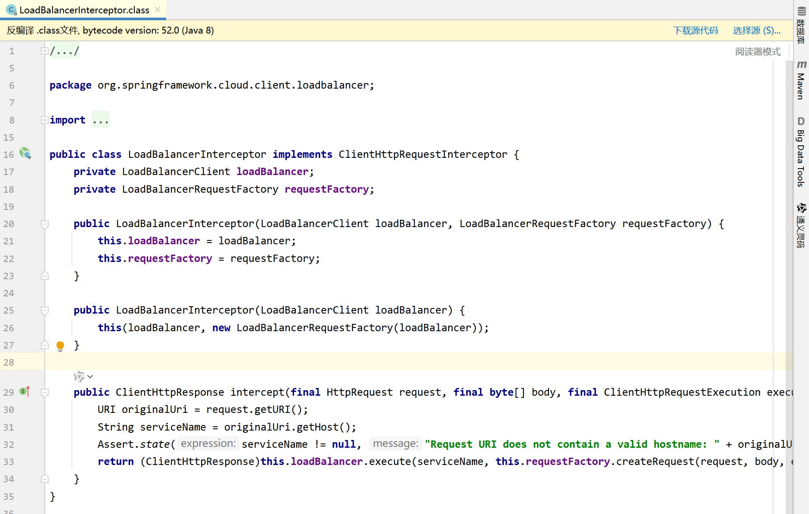

Nacos：负载均衡、Eureka
如何在SpringCloud中使用Nacos
面试官提问，怎么在你的服务中使用Nacos？
下载安装&使用
使用window直接在Nacos官网下载就可以了，或者使用docker拉取nacos的镜像，我使用的是windows安装。
安装Nacos后在bin目录下使用cmd，执行命令startup.cmd -m standalone，以单机的模式启动nacos。打开浏览器中默认的账号和密码都是nacos。
springcloud引入依赖
1 | <!-- springCloud --> |
方式一：不使用Nacos做统一配置管理，在application.yml配置nacos的地址
服务中配置nacos的地址。
1 | spring: |
方式二：使用Nacos做统一配置管理，使用bootstrap.yml，引导类文件。
1 | spring: |
Nacos负载均衡的原理
在 SpringCloud 中，Nacos 或者 eureka 作为服务注册与发现中心能够提供服务列表，而@LoadBalanced注解则为微服务提供负载均衡。因此讨论负载均衡是基于@LoadBalanced这个注解去讨论的，而服务注册与发现中心作为集群的管理站（提供服务拉取），两者的关系十分密切。
Ribbon
@LoadBalanced注解在旧版本中是基于ribbon实现的，先看看ribbon的实现原理。
LoadBalancerInterceptor类
LoadBalancerInterceptor类是@LoadBalanced注解的底层实现，先看一下源码

可以看到，这个类是实现了一个接口，叫 ClientHttpRequestInterceptor，继续跟进编辑器，可以看到这个接口就是负责拦截请求的。比如使用restTemplate发起一个请求，请求就会被拦截下来。
LoadBalancerInterceptor类实现了ClientHttpRequestInterceptor接口，那么就要重写接口的方法了，这个方法就是intercept()。
接下来分析这个方法是如何实现的。
实现原理
首先基于一个场景：在做订单查询的时候，需要把用户的信息也一并展示出来
配置
orderController是正常写，在orderService的地方使用restTemplate发起请求：
1 |
|
userService服务名称正常写： name: userservice
1 | server: |
order的启动类中也注册了restTemplate
1 |
|
解释源码
现在我在浏览器发起一个请求：userservice/user/1，此时
1 | final URI originalUri = request.getURI(); |
结果就是 http://userservice/user/1。
1 | String serviceName = originalUri.getHost(); |
得到服务名称userservice。此时进行服务拉取，比如nacos，eureka。拿到服务名称后交给后边去执行：
1 | return this.loadBalancer.execute(serviceName, |
跟进execute方法
此处没有方法体，源码中应该存在方法体，方法体中存在execute方法（原因：根据实际代码debug可能会有，或者源码不一样，总之继续跟进），继续跟进，此时来到了RibbonLoadBalancerClient的execute方法
继续跟进execute方法，发现以下代码：
1 | ILoadBalancer loadBalancer = getLoadBalancer(serviceId); |
拿着服务名称（userservice，也就是参数serviceid），生成ILoadBalancer类的实例，源码：
1 | /* |
public List
接下来就是负载均衡：
1 | Server server = getServer(loadBalancer, hint); |
跟进getServer方法

chooseServer？跟进去，发现调用父类
找父类以后发现提供规则Rule
跟进它发现是IRule接口，ctrl+H看一下实现类：
可以发现，IRule接口的实现类决定了负载均衡的实现规则。
所以决定负载均衡的实现有IRule接口定义的规则。
IRule

实现流程图
Nacos根据集群实现负载均衡
如果不设置负载均衡新规则则会采用默认的轮询方式选择服务，进而导致不优先访问本地集群的服务但是跨集群访问服务的情况。
所以需要消费者的yml文件中配置负载均衡的规则。NacosRule规则为集群优先规则。
Nacos服务实例的权重设置
采用NacosRule的负载规则以后，服务会优先选择同集群的提供者提供服务。但是访问的实例是随机的。
由于在实际部署中，希望性能好的设备能够承担更多的请求来提高服务的速度，因此需要控制访问频率来达到控制性能高的设备接受请求越多的效果。
Spring Cloud LoadBalancer
随着springcloud的版本升级，负载均衡的底层实现由ribbon变成了Spring Cloud LoadBalancer，实现原理放一篇csdn的博客，原理和上边基本相同，不过博客将具体使用的类讲得比较清楚，作为最新版本实现所以注重一下Spring Cloud LoadBalancer的总结。
Spring Cloud：负载均衡 - Spring Cloud Loadbalancer原理_spring-cloud-starter-loadbalancer-CSDN博客
ReactorLoadBalancer< ServiceInstance >
可以通过实现ReactorLoadBalancer<ServiceInstance>接口来创建自定义的负载均衡器。然后，你需要在Spring容器中以Bean的形式注册这个自定义的负载均衡器，并确保它在适当的时候被用于服务调用。不过，这种方法需要更深入地了解Spring Cloud LoadBalancer的工作原理，并且可能需要通过编程方式在服务消费者中显式地引用这个负载均衡器。
实际开发的算法比较困难，这里提一嘴(AIGC)。
1 | import org.springframework.cloud.client.ServiceInstance; |
Nacos VS Eureka
nacos和eureka都作为注册中心，服务提供者将服务列表注册到注册中心，而服务消费者定时将服务拉取（pull）到本地缓存。
然而，nacos会将服务的提供者划分成「临时实例」和「非临时实例」。默认情况下，所有实例都是临时实例。
临时实例中，nacos采用心跳检测，临时实例每隔一段时间会向nacos发送请求检查服务是否宕机，如果宕机，nacos会直接把服务剔除。
非临时实例，nacos主动向服务发送请求，检测服务是否宕机。如果宕机，nacos是不会剔除服务的，仅仅只是将服务标记为不健康。
在消费者的地方，如果服务宕机了，eureka采用的是pull，来更新消费者本地缓存，变相的通知消费者，有服务宕机不能再使用了，而nacos不同，nacos会主动push消息给消费者更新本地缓存，通知可能有服务宕机。因此eureka的更新效率低于nacos。
Nacos还支持统一配置管理，eureka不支持，因此基于springcloud的开发用的都是nacos，而eureka都不做选择。
此外，nacos支持AP，CP模式，默认情况下，nacos集群默认采用AP模式，存在临时实例时采用CP模式，而eureka仅仅支持AP模式。
AP、CP模式将在Seata中介绍具体的内容，包括base理论和CAP定理等。
总结
负载均衡
ribbon
LoadBalancerInterceptor的execute方法 => LoadBalancerClient接口的execute方法 =>RibbonLoadBalancerClient类的execute方法 => 方法中ILoadBalancer的getServerList可以拉取服务列表，ILoadBalancer的chooseServer方法跟进后，Server类中的方法调用IRule的接口，以及实现类去实现负载原理。
NacosRule
基于ribbon的实现。在集群中可以修改除了轮询或者随机的方式。
Spring Cloud LoadBalancer：
Spring Cloud LoadBalancer同样提供了LoadBalancerClient接口，但其实现类（如BlockingLoadBalancerClient、ReactorLoadBalancer<ServiceInstance>等）是基于Spring Cloud LoadBalancer的新实现。
和ribbon的用的类和接口差不多，LoadBalancerClient，不过底层重写负载均衡的策略改为了ReactorLoadBalancer<ServiceInstance>等。
Nacos VS Eureka
nacos对实例划分临时实例和非临时实例，且对应不同的检查机制。
nacos对消费者提供push操作更新消费者本地缓存的服务列表。
nacos对CAP模式有AP,CP的选择。
nacos支持统一配置管理。